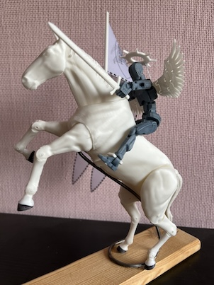
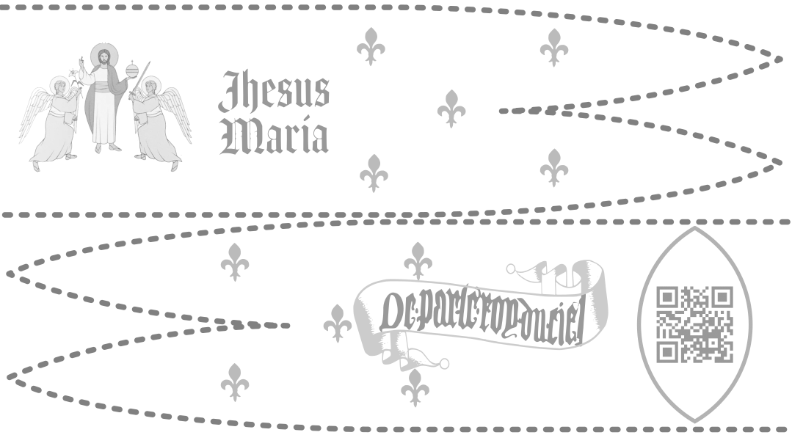
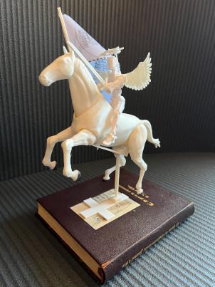
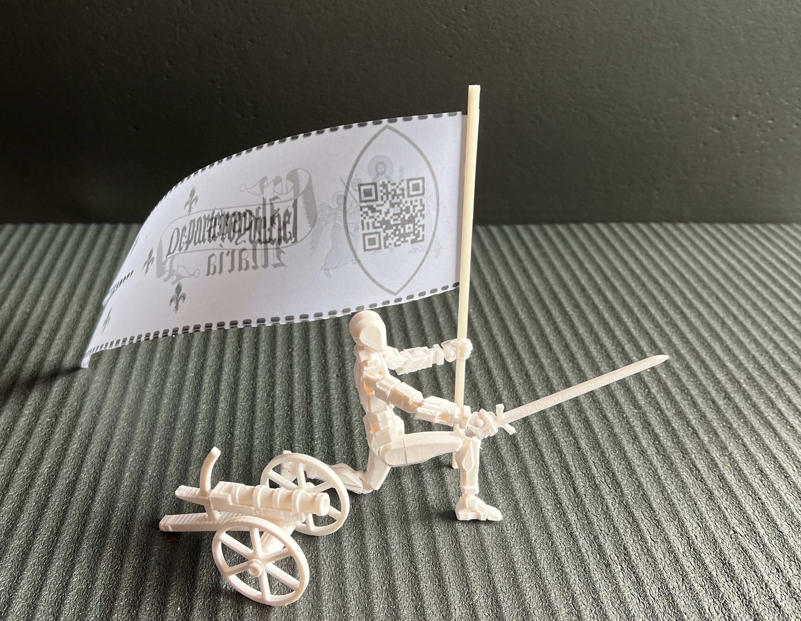
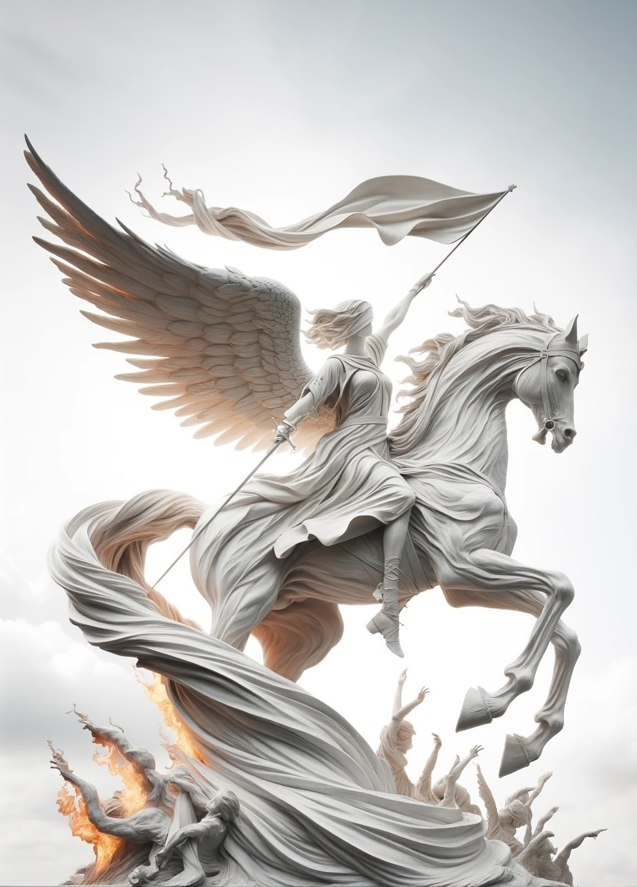

Jeanne d'Arc Romée Statues
The 3D Printed Statue

Elements
- White Horse: an eternal spiritual vehicle
- White Sword: spiritual discrimination
- White Wings: angel-like control of the metaphysical element Air
- White Halo: a sign of Sainthood, intrinsically linked to the wings
- No facial features: Jeanne reduced to her archetype
- Smoky color of her body: death by burning and asphyxiation with smoke
- Perfection of her body and the spiritual (white) interface with the horse
- White Standard: the symbol of strategy and eternal objective
- Action Figure: Jeanne d'Arc in the form of an action figure is true to her calling. It activates the ideals of fortitude, action, and loyalty to ideals in the target audience. We should not forget that Jeanne herself was at the age of playing with dolls when she had her first visions.

Statue ver. 2

Additional Elements
- White Body: purified by Christ as per Act 2 of the opera. The white material is of higher quality and durability than all else (the one used for the horse, for example). Symbol of spiritual resilience
- Cross Support: Supported the vehicle's creation (spiritual umbilic of the horse) by the stem of the Christian Cross
- Based on the Book: all is supported by historical evidence contained in the trial proceedings
In Battle

Elements
- Culverin: Jeanne's predilect weapon was altillery
Other Ideas for Statues

Back